Welcome to My Portfolio
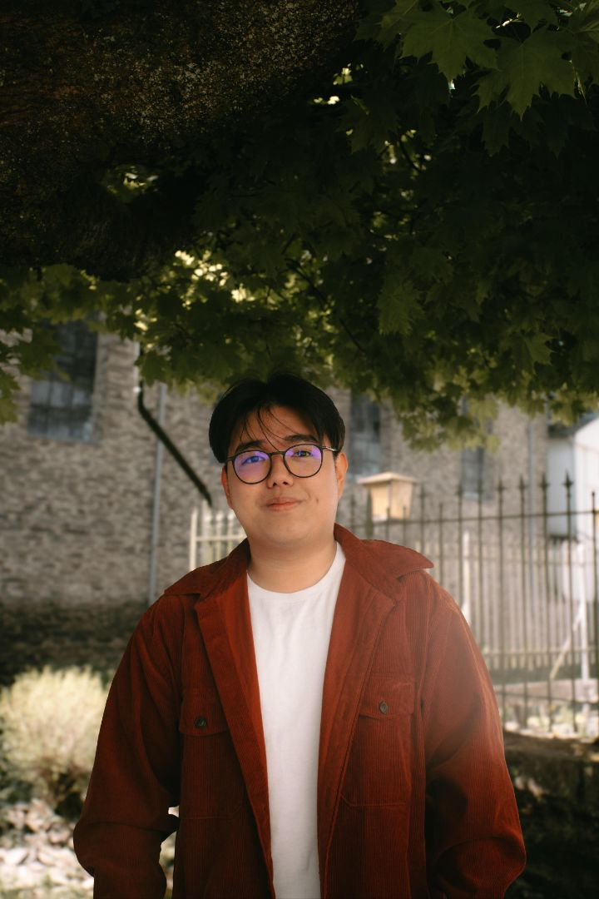
Hi, I'm Edwin Kusuma — a Digital Business and Innovation student at FH Aachen.
Here you will see a glimpse of my life!
“Life is a journey — explore it, learn from it, and enjoy every step.” - Anonymous
About Me
Hello, my name is Edwin Kusuma. I was born on February 11, 2002, so I am now () years old. I am the third child out of four siblings. I was born in a city called Makassar in an archipelago country called Indonesia. Perhaps the only cities you have heard of are Bali or Jakarta. My favorite hobbies are travelling, eating and playing badminton.
At first, I had never thought about studying in Germany, but in high school, I decided I wanted to try studying abroad, and I didn't see many opportunities in my own country. The number of graduates far exceeded the number of available jobs, so having a degree didn't guarantee employment; it was connections that guaranteed jobs 😊. I also chose Germany because of the cost and the excellent quality of education.
Looking ahead, I just hope that I will finish my studies on time and find a job that suits me. And of course, make a lot of money! 💰
Study History
🎓 University
- 2025 – Present – Aachen University of Applied Sciences – Digital Innovation and Business
- 2022 – 2024 – Aachen University of Applied Sciences – Mechanical Engineering
- 2021 – 2022 – Coburg, Germany – Studienkolleg (T-Kurs) – Preparatory program for technical university studies
🏫 School
2008 – 2020 – Makassar, Indonesia – Compulsory School Education – Completed elementary, middle, and high school
Hobbies
Badminton
"The harder you smash, the sweeter the victory." — Anonymous
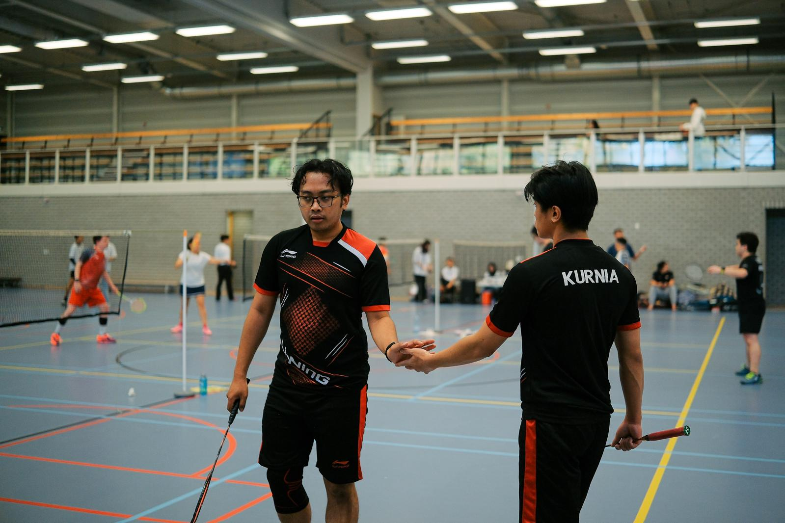
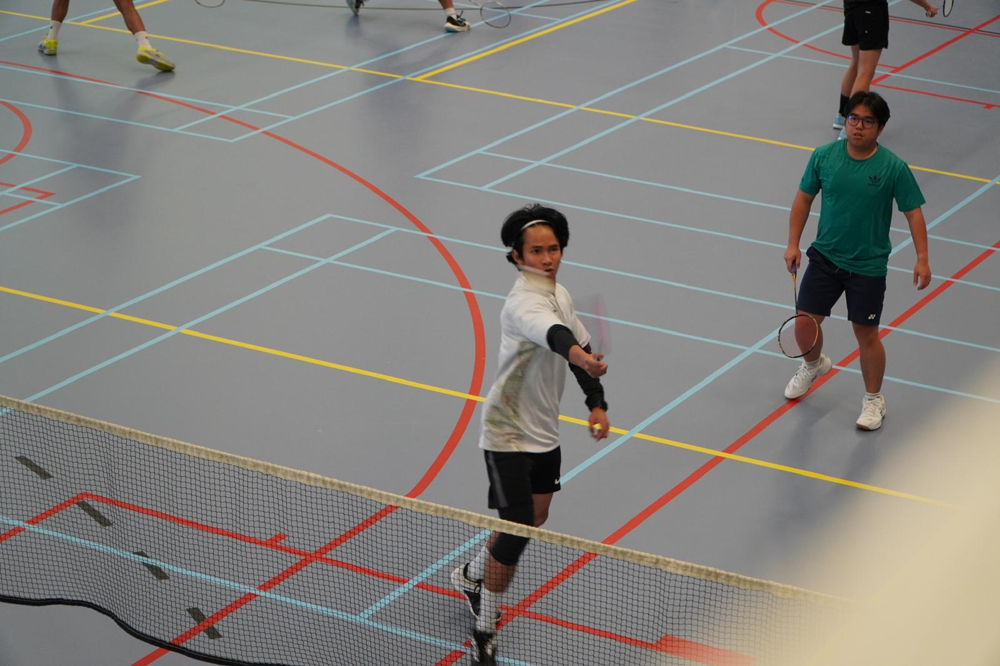
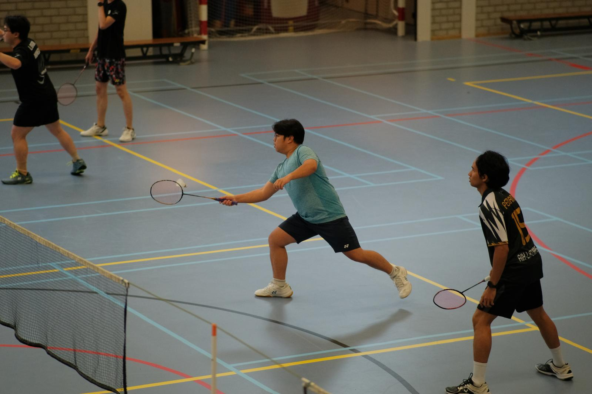

Travelling
"Jobs fill your pocket, but adventures fill your soul." — Jaime Lyn Beatty
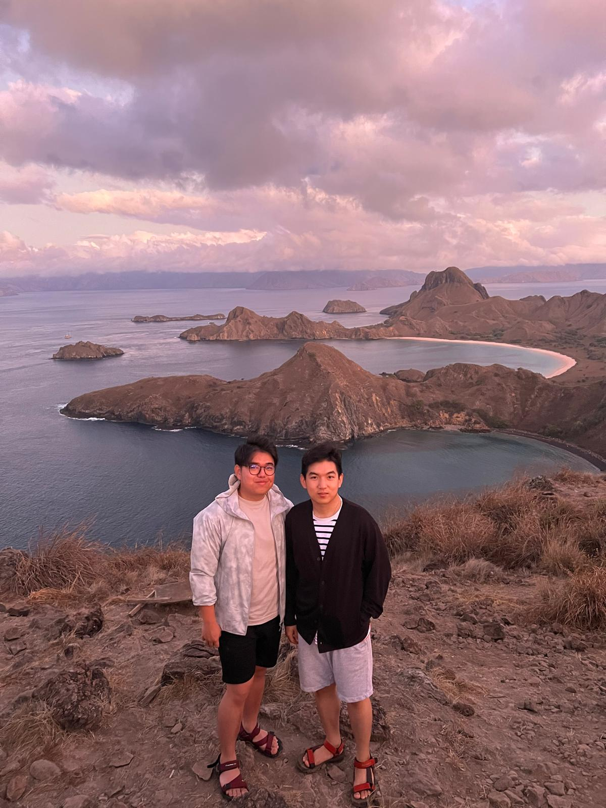
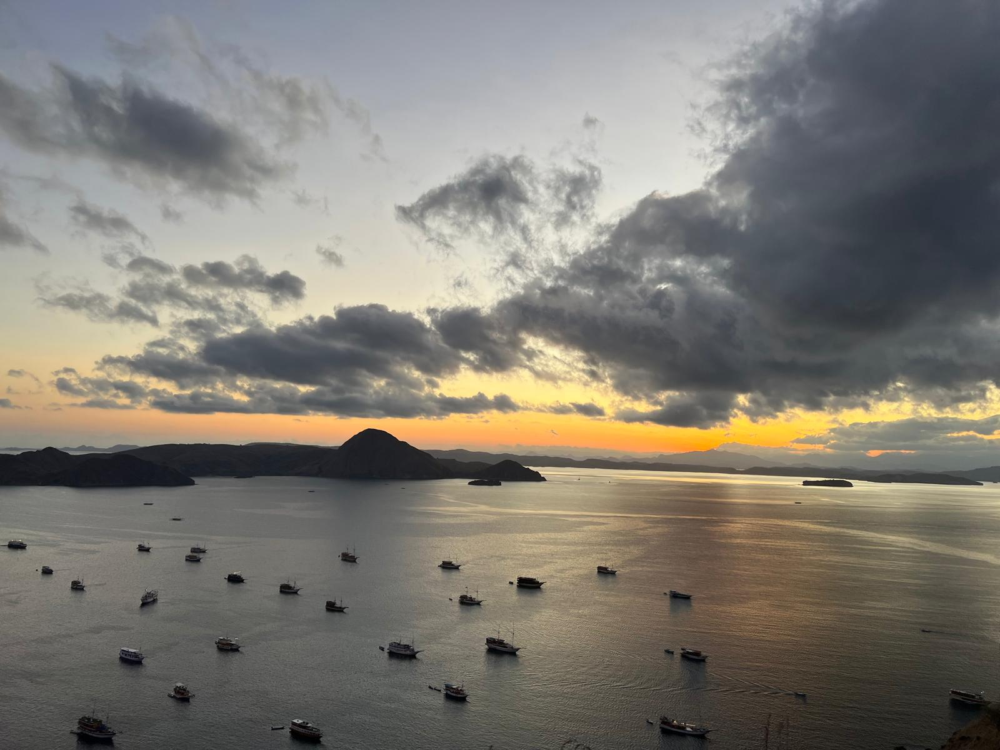
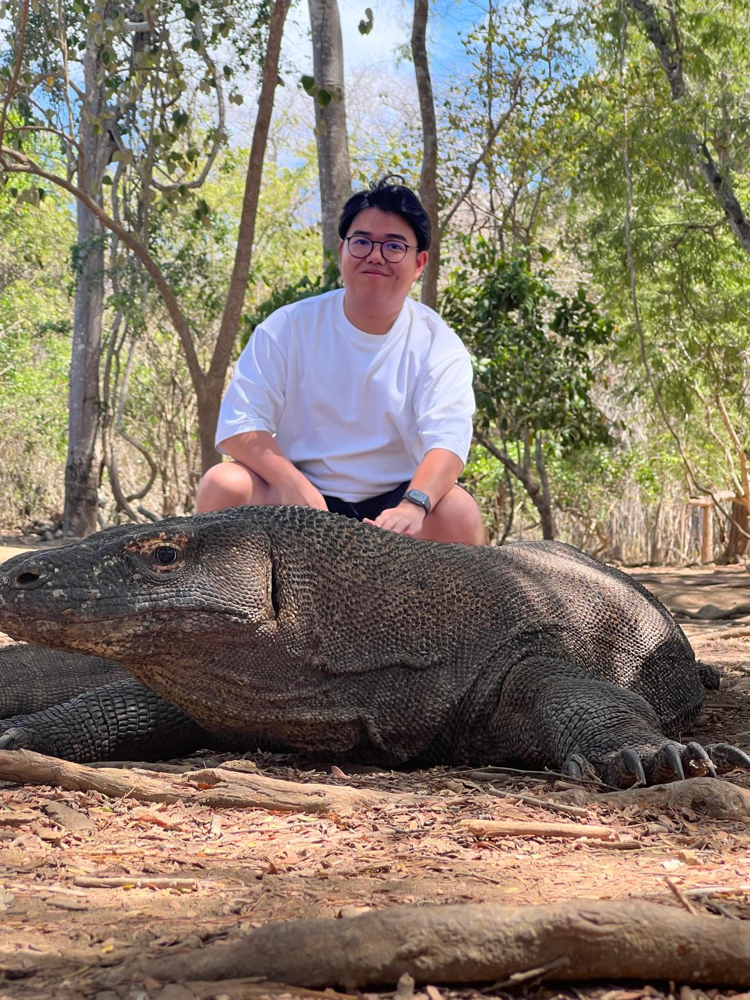
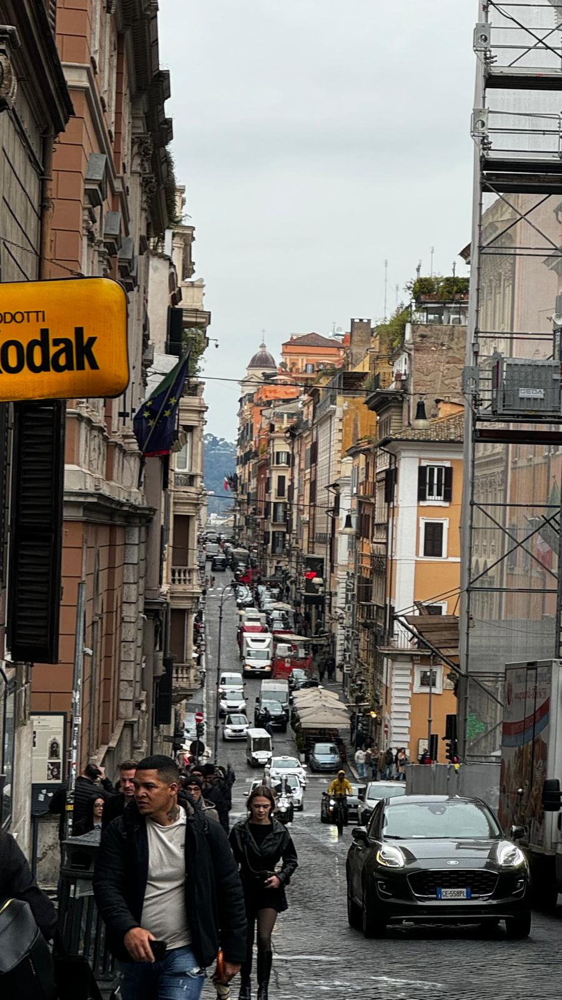

Eating
"Good food is the foundation of genuine happiness." — Auguste Escoffier
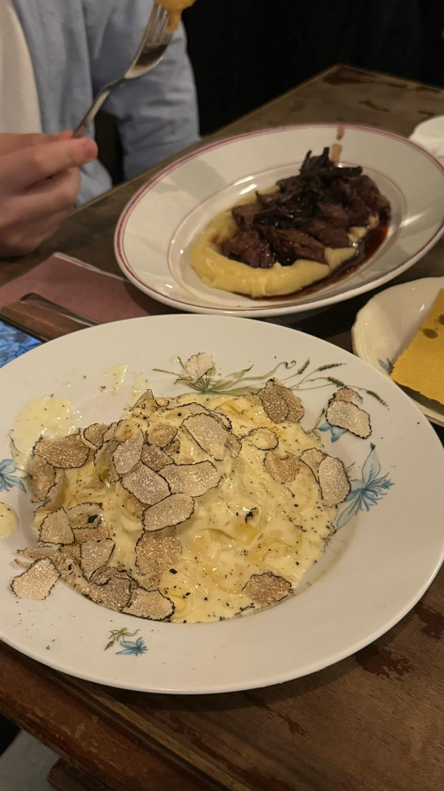
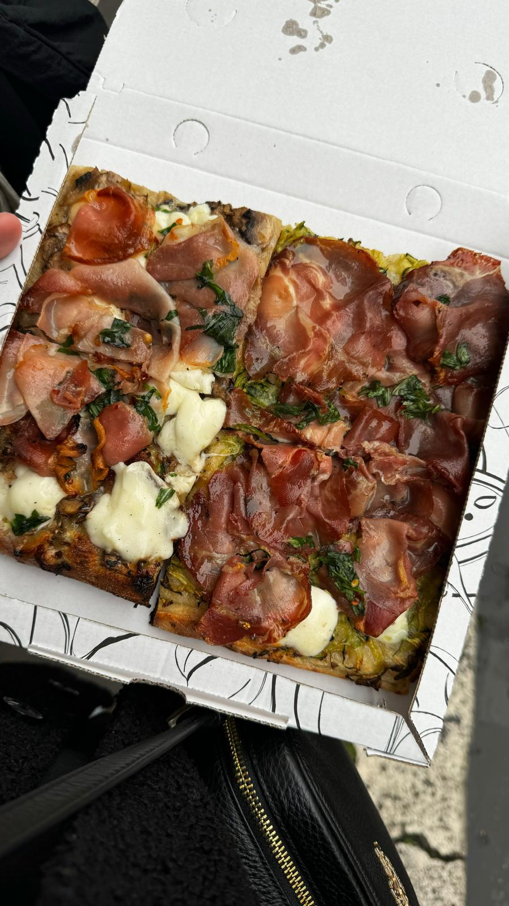
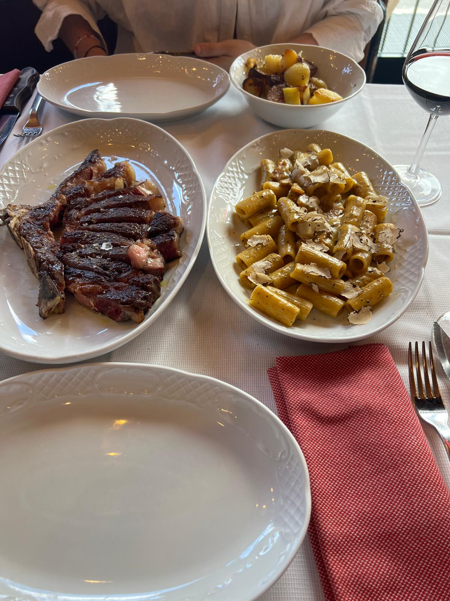
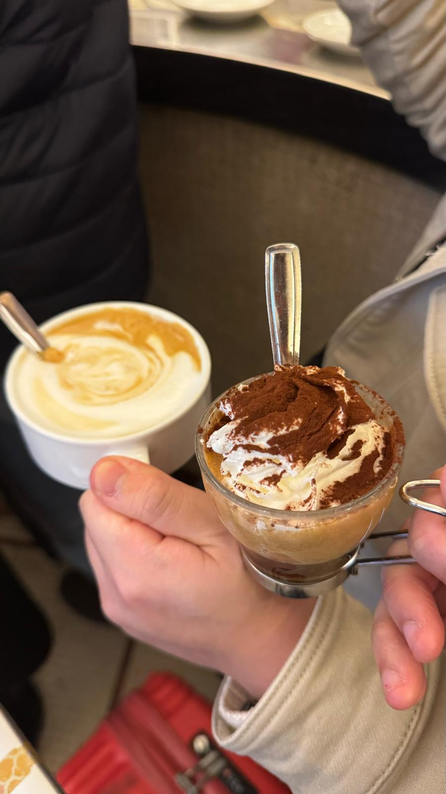
Contact
Email: edwinkusuma.ek@gmail.com
Phone: +49 151 71891223